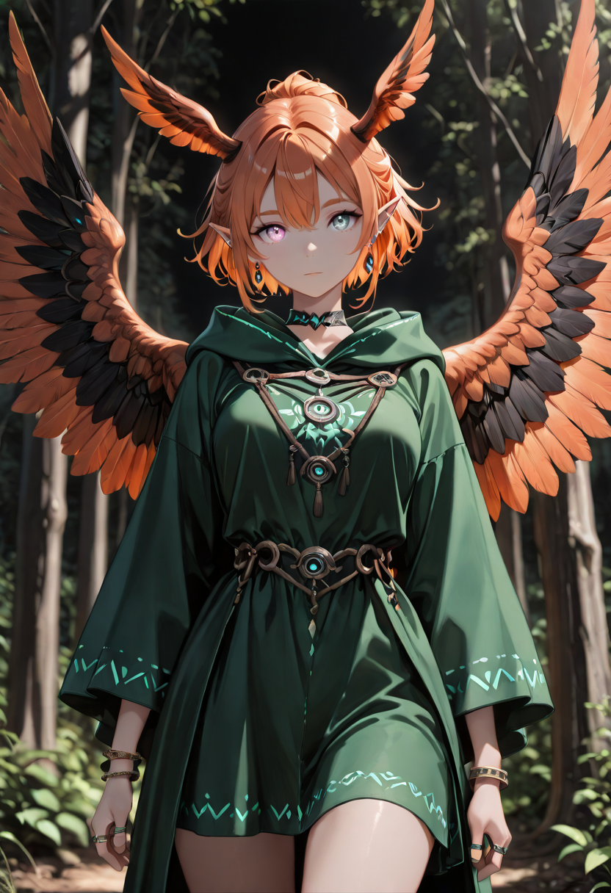
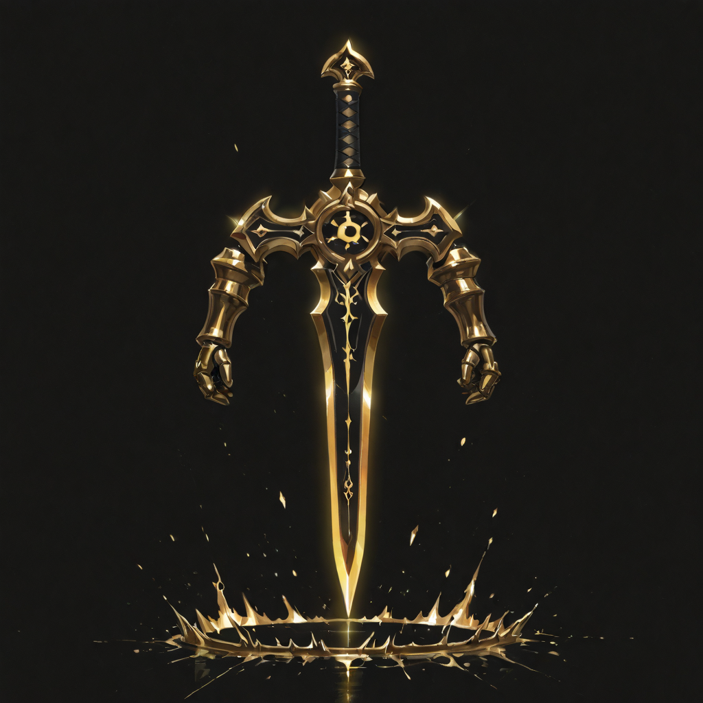
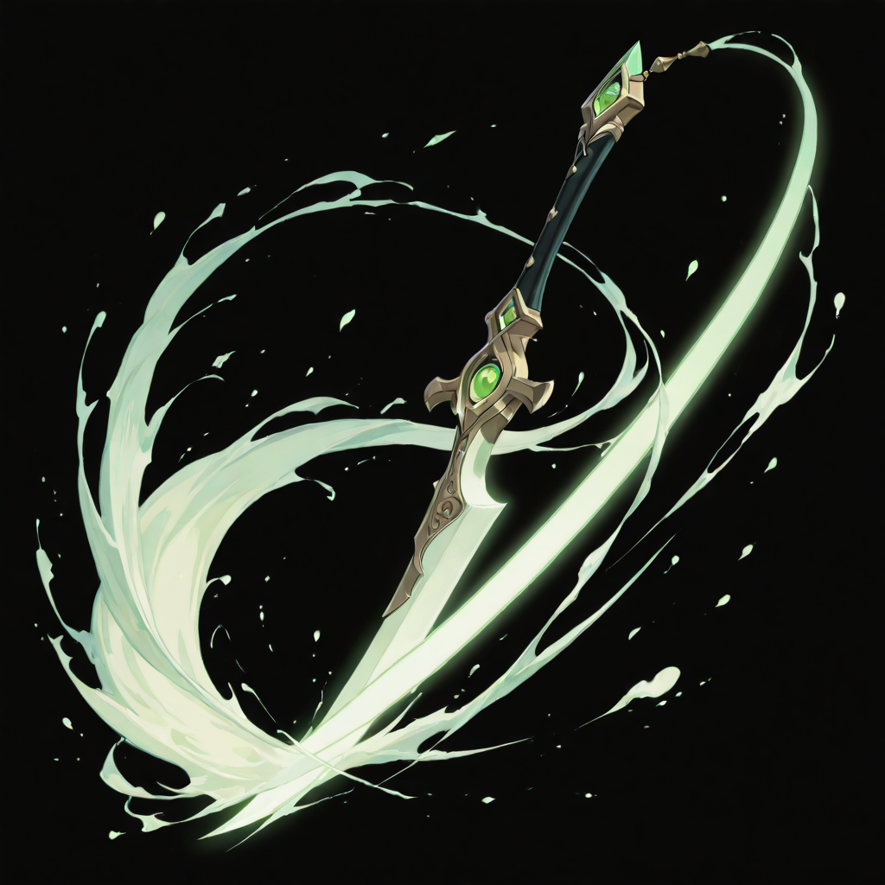
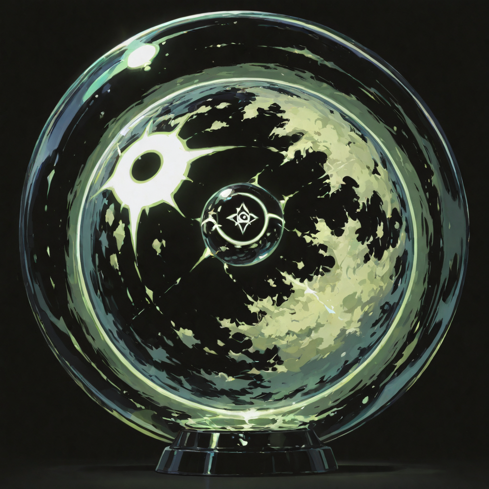
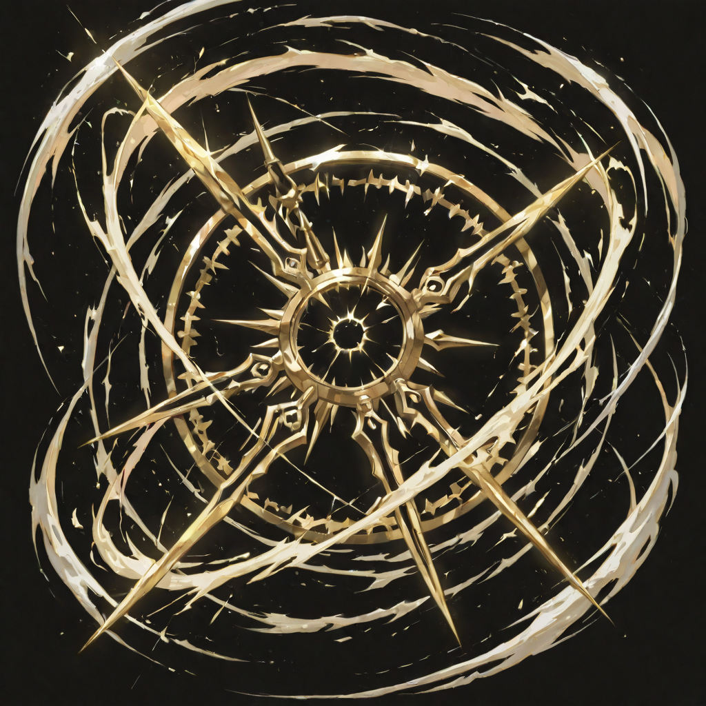
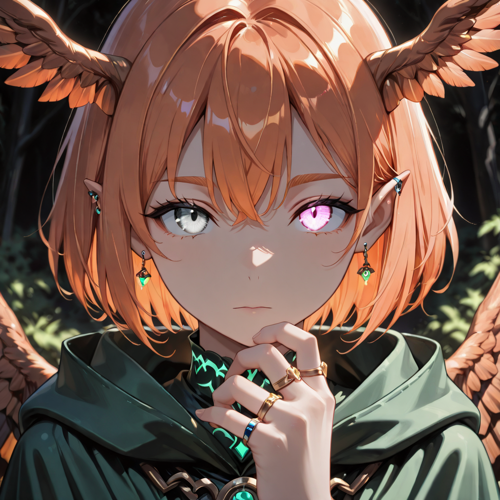
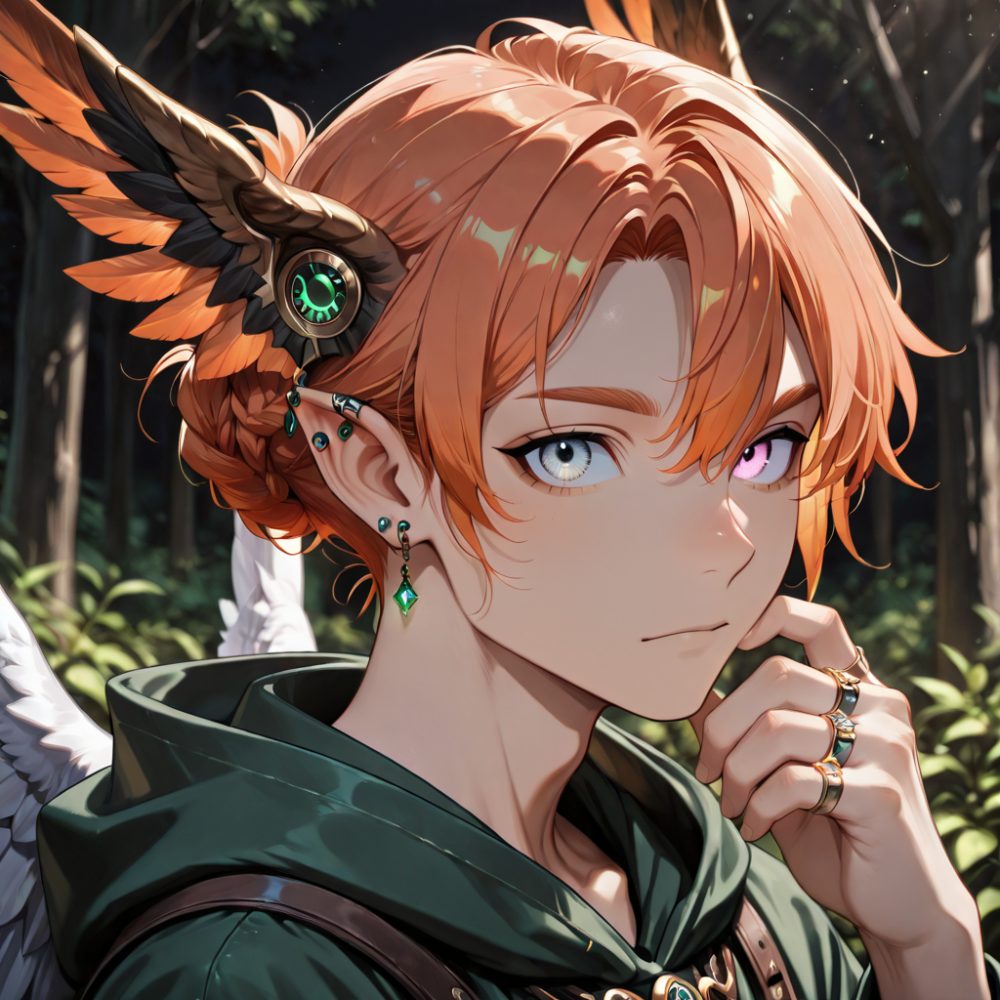

The Architecture of the Sky
The Seraph Mage is not "seraph" in the theological sense , she is not a messenger. The name refers to a classification of an older magic system, one that predated organized religion's attempt to claim divine hierarchy as its vocabulary. In that system, seraph meant the point at which elemental convergence achieves structural integrity. A seraph-class mage was not someone who channeled an element. She was someone who had become the meeting point between elements, and could shape that intersection deliberately.
She died three hundred years ago in a city whose name has been administratively removed from all surviving documents. The cause was not violence but physics: she attempted to merge two incompatible resonance fields as an act of creation, and the merger was successful in ways she did not survive. Malicott found what remained and recognized something that had not yet finished working.
The Seraph Mage does not think of herself as powerful. She thinks of herself as accurate. The distinction matters. Power implies effort; accuracy implies understanding. She has stopped expending effort on resistance that could simply be bypassed. Everything she channels goes through the substrate of reality directly , clean, fast, and without negotiating for right of way.
Tactical Data

Space Blade
Base Skill
Celestial Conclave
Active Skill
Transcendence
Passive
Solar Order
UltimateGallery

